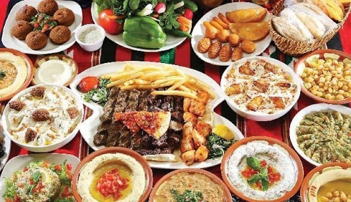

<!DOCTYPE HTML>
<HTML>
<link rel="stylesheet"href="css/new 1.css">
<title> about</title>

</HTML>
<BODY>
<h1>EGYPTIAN FOOD</h1>
<P style="color:purple;text-align:center;font-family:26;font-weight:bold;">From falafel to Koshary 8 dishes of the most famous Egyptian cuisine</p>


<p style="color:navy;font-size:30px;text-align:center;font-weight:bold;">

  And the culinary tradition in Egypt extends back more than 5 thousand years, that is, <br>
  since the time of the pharaohs.During the centuries that followed, local food,<br> 
  from ingredients and methods of preparation, imposed its control<br> over all the people who wandered 
  all over Egypt, including the Greeks, Romans, Arabs, Ottomans, French and British.<br>
  But what distinguishes Egyptian cuisine is the way these dishes are prepared with different 
  ingredients and flavors
</p>
</body>
</html>